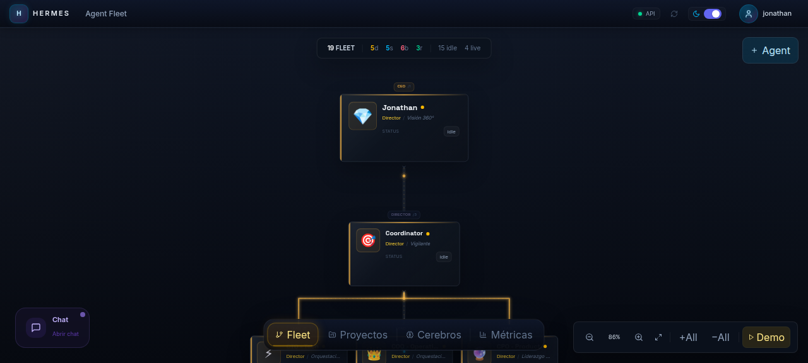
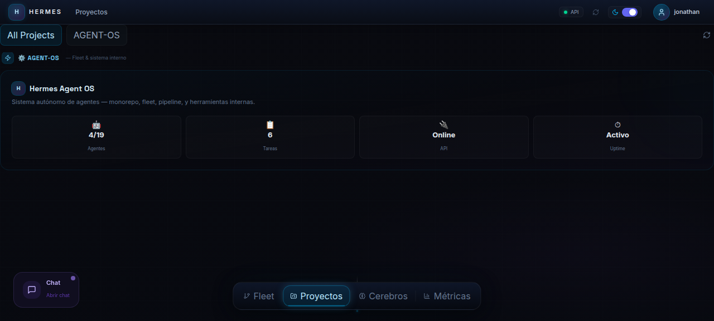
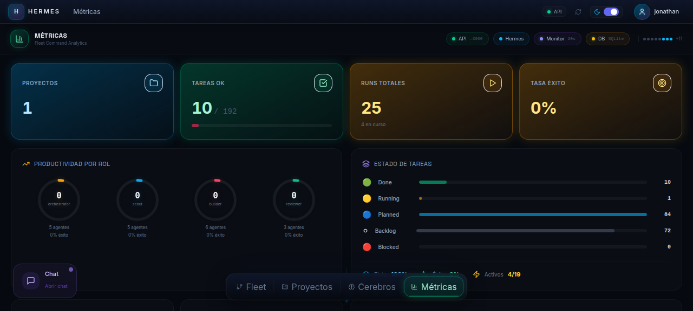

Son cajas negras — no sabes qué hacen ni qué archivos tocan.
→
📡
Trazabilidad total
Cada run, diff, log y decisión queda registrado, con streaming SSE en vivo.
Regenta es el command center para dirigir agentes de IA con la misma disciplina con la que lideras a un equipo humano: asignas tareas, defines alcances, revisas resultados y mantienes control total sobre lo que ocurre.
No es magia. Es control.
Cada problema clásico de los agentes autónomos tiene una respuesta de ingeniería en Regenta.
Cada run, diff, log y decisión queda registrado, con streaming SSE en vivo.
RBAC, file-locks, jaula de workspace y blocklist de comandos peligrosos.
Desbloqueo de dependencias, locks exclusivos y retry automático.
Memoria por agente (brain v3, TF-IDF) que recuerda el contexto entre runs.
Aprobación manual del CEO en cada fase crítica. Los deploys nunca son automáticos.
Modelos locales vía llama.cpp bajo demanda → coste $0, sin enviar tu código fuera.
Todo lo que necesitas para operar una flota de IA en producción, con disciplina de ingeniería.
Supervisa el fleet completo en un ciclo de 10 s: desbloquea dependencias, reintenta, escala y dispara auto-reviews.
18 agentes en un organigrama de 4 niveles —orquestadores, scouts, builders y revisores— con identidad y cerebro propios.
De un objetivo en lenguaje natural a código revisado: scout → plan → aprobación → build → review → QA → done.
Grafo de memoria estilo Obsidian con búsqueda TF-IDF. Cada agente recuerda decisiones y contexto entre runs.
Despacha por agente entre 8 providers (Anthropic, OpenAI, Groq, Gemini…) con failover, cuarentena y backoff 429.
Canales por proyecto, DMs CEO↔agente con memoria, grupos multi-agente y comandos (/task, /approve).
La UI nunca habla con el motor: todo pasa por la API. Cada capa tiene un contrato claro.
Organigrama vivo, Kanban con pipeline de 7 fases y un dashboard de salud — todo en tiempo real por SSE.



Tú das el proyecto. Los directores planifican. Los especialistas ejecutan. El Coordinator supervisa.
Delegar no significa perder el mando. Cada acción pasa por la guardia.
Permisos granulares por rol: orchestrator, scout, builder, reviewer.
allowedFilesCada tarea declara qué archivos puede tocar; el builder no se sale.
Adquisición exclusiva por tarea con expiración automática.
Jaula de workspace que resuelve symlinks con realpath, no solo léxico.
Bloquea deploy/publish/login y prompts interactivos.
AES-256-GCM, IV por fila, master key fuera del repo (modo 0600).
Registro inmutable de cada acción, con stream SSE en /api/audit/stream.
Skip de tareas con 3+ fallos; keys con error aisladas sin reintentos en bucle.
🔐 Auth: JWT con expiración de 4h, bcrypt (cost 12), queries parametrizadas y rate-limiting. En producción la API exige JWT_SECRET — sin fallback inseguro.
Monorepo npm workspaces · 13 paquetes @regenta/* + la app desktop.
API + Desktop a la vez. Inferencia local opcional para coste $0.
# Clona y arranca (dev)
git clone https://github.com/JoniMartin27/regenta.git
cd regenta
npm install
# API + Desktop a la vez
npm run dev
# → API http://localhost:3000
# → Web http://localhost:5173
# Full-stack a coste $0 (inferencia local + observabilidad)
npm run start:all¿Producción? JWT_SECRET es obligatorio. docker compose up -d --build levanta api + web.
Dirige agentes de IA con la disciplina de un equipo de ingeniería — sin renunciar al control.
No es magia. Es control.